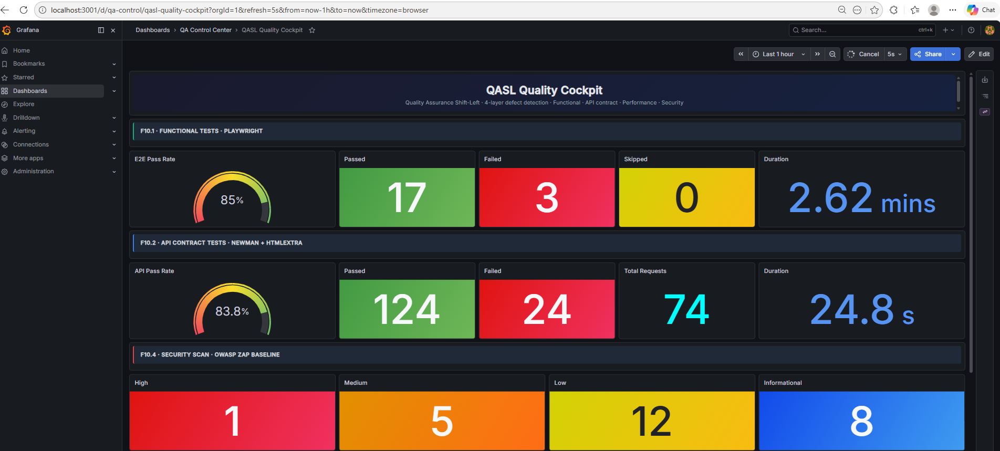
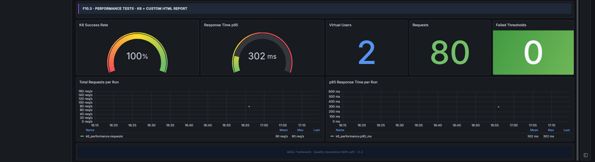

A 10-phase methodology where the DoD of one actor becomes the DoR of the next, ending with 4 layers of automated defect detection — Functional, API contract, Performance and Security.
Each report is the canonical artifact emitted by its tool, untouched. Click to open.
Playwright + TypeScript suite · 20 TCs traced 1:1 to CSV · Allure native report.
HAR → Postman Collection v2.1 → Newman with strict assertions · honest pass/fail reporting.
Standalone K6 script · dynamic token flow · 2 VUs concurrency · custom HTML report.
Baseline scan · passive · non-intrusive · native ZAP report with 26 documented findings.
All four layers of metrics consolidated in a single dashboard. Live at http://localhost:3001 when running locally · static evidence below.


Real defect found by the framework on the SUT, documented per ISTQB / IEEE 1044 / OWASP / CVSS standards.